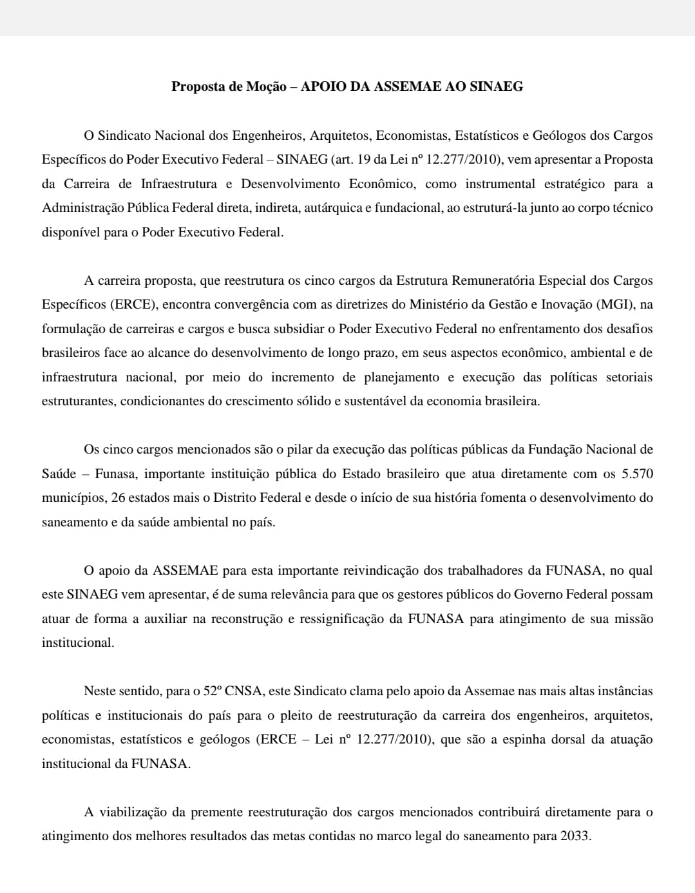

Hoje 12/07, o SINAEG (Sindicato dos Arquitetos, Economistas, Engenheiros, Estat√≠sticos e Ge√≥logos do governo federal, conforme a Lei 12.277/2010) realizou nesta noite uma reunião crucial com o presidente do Cofecon (Conselho Federal de Economia) para discutir a pressão do governo federal pela reestrutura√ß√£o da carreira ERCE (Estrutura dos Cargos Espec√≠ficos). üìä
Os economistas, sendo um dos cinco cargos fundamentais nessa carreira, estão no centro dessas mudanças propostas. A reunião abordou a importância de assegurar que qualquer reestruturação respeite os direitos e a valorização dos profissionais da área, garantindo assim a continuidade da excelência e competência que caracterizam os economistas brasileiros.
Acompanhe nossas redes para mais atualiza√ß√µes sobre essa importante discussão que impacta diretamente o futuro dos nossos profissionais! üåü
#SINAEG #Cofecon #Economistas #ReestruturaçãoERCE #Economia #notícia
Com servidores da carreira do ERCE e filiados ao SINAEG presentes na 52º Congresso Nacional de Saneamento da Assemae, foram aprovados duas moções de apoio às reivindicações dos servidores do ERCE (Lei n⁰ 12.277/2010) para a merecida reestruturção dos cargos de engenheiro, economista, estatístico,arquiteto e geólogo do Poder Executivo Federal.
A reestruturção dos cargos através da criação da carreira de engenharia e desenvolvimento econômico contribui para a melhor execução das políticas públicas nos órgãos da APF, uma vez que esses servidores atuam de forma transversal e finalística em diversos órgãos da administração pública federal direta, autárquica e fundacional.
Confira as duas moções aprovadas no 52º Congresso Nacional de Saneamento da Assemae na imagem abaixo:

Na última sexta-feira, 10 de maio de 2024, a Direção do SINAEG recebeu uma notificação da Secretaria de Relações do Trabalho do Ministério da Economia (SRT/MGI), solicitando a indicação de dois representantes para compor a Mesa Específica e Temporária de Negociação do Plano de Geral de Cargos do Poder Executivo (PGPE), Correlatas e Estrutura Remuneratória Especial dos Cargos Específicos (ERCE).
O Sindicato lamenta profundamente que a SRT/MGI persista em não reconhecer e valorizar adequadamente os cargos de engenheiro, arquiteto, economista, estatístico e geólogo, negando-lhes uma mesa específica que trate das carreiras e cargos da infraestrutura, desenvolvimento e investimento público. O SINAEG reitera que sua missão não está alinhada com a indicação de representantes para compor uma mesa que não considera de forma adequada às particularidades e necessidades dos servidores dos cargos regidos pelo Capítulo VII da Lei nº 12.277/2010.
Apesar das divergências, o SINAEG se fará presente na mesa de negociação, mantendo a mesma disposição que levou os servidores da ERCE a fundarem o sindicato, em busca do reconhecimento de sua carreira, bem como a necessidade de uma remuneração justa, alinhada às exigências e responsabilidades das formações e funções desses servidores.
No contexto das discussões em andamento, surgem questionamentos sobre o enquadramento e as atribuições dos cargos ERCE em comparação com os demais considerados pelo próprio Governo como Suporte Administrativo. Isso inclui cargos “auditores de não sei o quê”, “analistas de não sei quê lá” e “especialistas de sabe-se lá o quê”, geralmente vistos como mais nobres e recebendo tratamento diferenciado em negociações salariais e de carreira.
Essa classificação vaga e imprecisa, Suporte Administrativo, abrange atividades de apoio e assistência dentro de uma organização, dentre os quais, responsáveis por Logística, Administração e Pessoal, contribuindo para o funcionamento eficiente das operações principais e desempenhando um papel crucial no cumprimento das metas organizacionais. O SINAEG entende ser crucial reconhecer a importância e valorizar esses servidores, dentro do contexto do Plano de Geral do Poder Executivo (PGPE) e correlatos.
E que a concepção implícita do Governo de separação dos profissionais ERCE, como também os de suporte, em uma função meramente auxiliar das atividades finalísticas das pastas não apenas perpetua uma visão hierárquica ultrapassada dentro da Administração Pública, mas também limita drasticamente o potencial desses técnicos em contribuir de forma significativa para o desenvolvimento e eficácia das políticas públicas.
É evidente que as atividades desempenhadas pelos cargos da ERCE não se enquadram em atribuições administrativas ou atividades meio, mas sim em uma estrutura de cargos de atuação finalística e transversal em diversos órgãos da Administração Pública.
Questiona-se se os demais servidores do suporte administrativo possuem as mesmas exigências dos ERCEs, o que ressalta a inadequação de classificar os cinco cargos da Lei 12.277 nesse grupo, dada a especialização e funções. Os servidores da ERCE têm exigências específicas como diploma correspondente ao cargo, registro profissional prévio, anuidade em dia e Anotação de Responsabilidade Técnica (ART).
Os servidores da ERCE questionam se suas atividades não são realmente similares às dos demais considerados "finalísticos", e se, portanto, teriam permissão para suspender suas responsabilidades. Isso implicaria que os servidores das carreiras de "auditores, analistas e especialistas" lidariam com questões técnicas de infraestrutura, desenvolvimento econômico-social e investimento público. Considerando que possuem formação igual e desempenham atividades similares, senão as mesmas, é injusto que recebam salários desiguais, muitas vezes a metade.
Em suma, o Governo estigmatiza os ERCEs ao associá-los erroneamente a um grupo que não lhes cabe e desconsidera a complexidade e importância de suas atribuições, que exigem formação técnica específica e regulação legal. Isso destaca a necessidade de um diálogo mais profundo e transparente sobre as definições e distinções entre os diferentes tipos de cargos e suas atribuições na Administração Pública.
Neste contexto, o SINAEG destaca ainda a importância de um discurso firme para refutar publicamente a escolha política do Governo, de não apenas subvalorizar as carreiras da ERCE, mas também minar os direitos e reconhecimento desses servidores.
Por exemplo, apesar do impacto orçamentário de uma reestruturação aos ERCEs ser relativamente baixo, como comprovados em estudos e simulações do nosso sindicato entregues ao MGI. O Governo opta por gastar menos com servidores o qual são exigidos a mesma formação e atividades, perpetuando desigualdades, transferindo-lhes o ônus do novo Marco Fiscal.
Não por acaso, enquanto a média dos acordos firmados com as carreiras de servidores que possuem maiores patamares remuneratórios e menores perdas inflacionárias durante o período 8 anos ultrapassa 20% em muitos casos, o Governo apresentou índices ao redor de 10% (zero em 2024) para os servidores que recebem as remunerações mais baixas do funcionalismo, entre eles aqueles que estão na mesa do tal “suporte administrativo”. Vale lembrar que, esses também tiveram as maiores perdas.
Por fim, o SINAEG alerta que, diante da trágica situação das inundações no Rio Grande do Sul, os servidores da ERCE têm um papel crucial na reconstrução das áreas afetadas. Enquanto milhares de pessoas aguardam resgate e mais de 300 municípios mal conseguem calcular os danos causados pelas enchentes, cientistas alertam que eventos climáticos extremos continuarão ocorrendo. Relatórios da ONU destacam a recorrência desses fenômenos e a urgência da realocação para mais de 3 milhões de brasileiros que vivem em áreas de risco.
Os servidores ERCE, distribuídos em órgãos como Ministérios da Integração Regional, das Cidades, da Agricultura, das Comunicações, do Desenvolvimento e da Assistência Social, FUNASA, DNOCS, entre outros, com expertise em engenharia, arquitetura, geologia, estatística e economia, serão os responsáveis técnicos nos projetos, emendas e convênios de reconstrução e transferência de recursos. O trabalho dos ERCEs será a garantia que as comunidades afetadas sejam assistidas e amparadas durante todo o processo de recuperação e evitando futuras tragédias similares.
Contudo, a luta dos ERCE não termina com a campanha salarial de 2024; é um compromisso contínuo do SINAEG em defender os direitos e interesses de seus membros, persistindo além das próximas campanhas. Nesse sentido, é fundamental mobilizar a base, conscientizando-a sobre a importância de valorizar a carreira da ERCE e pressionar o Governo e o Congresso Nacional por reconhecimento formal, remuneração condizente com a formação e responsabilidades, além de condições de trabalho adequadas.
O SINAEG chama aos servidores ERCEs a se filiarem e participarem das atividades. E à Sociedade, a apoiar a proposta de criação do plano de carreira e do ciclo de desenvolvimento e infraestrutura no Poder Executivo Federal.
Para saber mais acesse: https://sinaeg.org.br
O presente texto aborda a necessidade premente da implementação de um Plano de Carreira destinado aos profissionais que compõem a assim chamada “Estrutura Remuneratória de Cargos Específicos” (ERCE): engenheiros, arquitetos, economistas, estatísticos e geólogos, no âmbito do Poder Executivo Federal. A implementação de um Plano de Carreira para os profissionais da ERCE é uma demanda premente que ganha destaque no cenário do serviço público brasileiro. Esses servidores desempenham papéis cruciais para o desenvolvimento sustentável, infraestrutura, execução das políticas públicas e funcionamento da Administração Pública. No entanto, apesar de sua importância estratégica, esses profissionais enfrentam desafios significativos, desde a falta de reconhecimento até a disparidade salarial em relação a outras carreiras. Neste contexto, a criação de um Plano de Carreira surge como uma medida essencial para valorizar e impulsionar o desenvolvimento profissional dos ERCEs, promovendo não apenas sua integração efetiva, mas também o progresso do serviço público e, consequentemente, da sociedade como um todo.
A Estrutura Remuneratória de Cargos Específicos (ERCE) engloba profissionais altamente especializados e técnicos nos cargos de Arquitetos, Economistas, Engenheiros, Estatísticos e Geólogos no Poder Executivo Federal, conforme destacado pela Lei nº 12.277/2010. Diferentemente da maioria das estruturas de pessoal do Serviço Público Federal, para esses cargos é exigida graduação em ensino superior específica para cada um desses cinco cargos (os respectivos diplomas de bacharel e o registro nas suas recíprocas autarquias de fiscalização profissional (CAUs, CREAs, CORECONs, etc.).
Os profissionais que compõem os ERCEs são encontrados em diversos órgãos e entidades do Poder Executivo Federal, incluindo ministérios, autarquias, fundações públicas e agências reguladoras. Eles atuam em áreas como energia, transporte, habitação, meio ambiente, economia, planejamento urbano, entre outras, desempenhando funções essenciais para o desenvolvimento econômico-social do país e até no funcionamento básico do Estado. Assim, desempenham um papel crucial no planejamento, execução e monitoramento de projetos e políticas públicas relacionadas à infraestrutura, desenvolvimento econômico, gestão de recursos físicos públicos, governança dos recursos naturais e sustentabilidade, etc.
Silenciosos e desconhecidos do grande público, e muitas vezes negligenciados em termos de reconhecimento pela Alta Administração, e eclipsados por outras carreiras mais prestigiosas e com tabelas remuneratórias elevadas, os profissionais
da ERCE desempenham um papel fundamental em diversas áreas-chave do governo federal.
Seu trabalho é essencial para o funcionamento básico e regular dos órgãos públicos, desde a manutenção das instalações físicas até o gerenciamento e fiscalização de contratos administrativos. Mas não só. São os responsáveis pela análise de convênios e termos de cooperação para repasse de recursos e execução descentralizada de programas e projetos, bem como pela elaboração, implantação, execução e monitoramento de políticas públicas das mais variadas áreas, desde questões econômicas e ambientais, passando pelas sociais.
São eles que asseguram a execução eficiente do Programa de Aceleração do Crescimento (“Novo PAC”), planejando, executando e fiscalizando obras de infraestrutura em todo o país. Os ERCEs estão envolvidos no planejamento e na execução de projetos habitacionais em todo o país (“Programa Minha Casa, Minha Vida”), garantindo o acesso à moradia digna para milhões de brasileiros. Na busca por fontes de energia limpa e sustentável, como no Programa de Desenvolvimento de Energias Renováveis, os profissionais da ERCE desempenham um papel fundamental no planejamento e na implantação de projetos de energia solar, eólica e outras fontes renováveis.
Essencial para a saúde pública e o desenvolvimento humano, o Programa Nacional de Saneamento Básico, conta com a expertise dos ERCEs na elaboração e execução de projetos de abastecimento de água, tratamento de esgoto e gestão de resíduos sólidos. Os profissionais da ERCE ainda estão no Projeto de Expansão e Modernização de Infraestrutura de Transporte, sendo responsáveis pelo planejamento e pela supervisão de obras de ampliação e modernização de rodovias, ferrovias, portos e aeroportos em todo o território nacional.
Os ERCEs podem estar envolvidos na análise de dados e estatísticas para identificar áreas de maior vulnerabilidade social, contribuindo para a identificação e inclusão de famílias elegíveis no programa, tais como no Programa Bolsa Família. Ainda estão na busca por soluções de infraestrutura e habitação adequada para comunidades carentes, os profissionais da ERCE participam do planejamento e execução de projetos de urbanização de favelas, visando melhorar as condições de moradia e acesso a serviços básicos.
Os ERCEs são os responsáveis pela elaboração de projetos de agricultura familiar e segurança alimentar, promovendo o acesso a alimentos saudáveis e sustentáveis para comunidades em situação de vulnerabilidade. E em regiões onde o acesso à água potável é limitado, os profissionais da ERCE estão envolvidos no planejamento e na implementação de projetos de abastecimento de água, garantindo o acesso a esse recurso essencial para a saúde e o bem-estar da população.
Passados quase quinze anos desde a promulgação desta lei, os profissionais ERCE enfrentam uma série de desafios que afetam diretamente sua atuação e reconhecimento no contexto do serviço público. Inicialmente indistintos ao Plano
Geral de Cargos do Poder Executivo (PGPE), mas destacados pelo Capítulo VII da Lei nº 12.277/2010, os servidores públicos federais desses cinco cargos específicos de infraestrutura, desenvolvimento e investimento público clamam por uma estrutura mais alinhada às suas necessidades. Um dos principais problemas enfrentados pelos integrantes da ERCE é a sobreposição com outras carreiras, muitas vezes resultando em conflitos de competências e atribuições. Além disso, a falta de regramento próprio mesmo sobre atividades que exigem responsabilidade técnica contribui para a falta de clareza e direcionamento em relação ao seu papel dentro dos órgãos governamentais.
A dispersão entre os diversos órgãos também é um obstáculo, dificultando a integração e colaboração entre os profissionais da ERCE e impactando negativamente na eficiência e eficácia de suas atividades. Os profissionais da ERCE enfrentam ainda uma disparidade salarial significativa quando comparados a cargos assemelhados tanto no setor público quanto no setor privado. Em muitos casos, os servidores dessas profissões recebem salários abaixo do piso estabelecido pelos conselhos profissionais e também abaixo do que é praticado no mercado privado para profissionais com habilidades e qualificações semelhantes. Essa defasagem não apenas desmotiva os ERCE, mas também compromete a capacidade do governo de atrair e reter talentos qualificados nessas áreas essenciais.
E ainda, preservando os cinco cargos originais da ERCE - arquitetos, economistas, engenheiros, estatísticos e geólogos -, o plano de carreira reconhece a importância e a especificidade dessas profissões, garantindo a continuidade e o reconhecimento das competências individuais de cada uma delas. O plano de carreira também ofereceria trilhas de conhecimento e qualificação comuns aos cinco cargos, bem como específicas para cada um deles, permitindo o desenvolvimento de competências especializadas em áreas de interesse comum e transdisciplinar, mas garantindo a valorização das habilidades distintas de cada profissão. A proposta deve conferir características de uma “carreira transversal”, isto é, permitindo que os servidores atuem em diferentes órgãos do governo federal. Essa flexibilidade de alocação será baseada em competências individuais e formação complementar, proporcionando mobilidade e adaptabilidade dos profissionais da ERCE em diversos contextos e projetos, requisitos técnicos e as necessidades estratégicas de estado do momento.
Por fim, a proposta não se limita à criação de um plano de carreira isolado, mas busca integrar esses profissionais a um ciclo de carreira mais amplo, voltado especificamente para a infraestrutura, promovendo uma abordagem mais abrangente e coordenada para o planejamento e execução de projetos de desenvolvimento sustentável, infraestrutura e investimento público.
Em suma, a transformação dos ERCEs em um plano de carreira, equiparando-os aos demais servidores do ciclo de infraestrutura, não apenas reconhece a importância desses profissionais, mas também promove uma gestão mais eficiente dos recursos humanos do governo federal, contribuindo assim para o progresso sustentável do país.
Em síntese, a jornada em direção à instituição de um Plano de Carreira para os profissionais da Estrutura Remuneratória de Cargos Específicos (ERCE) reflete a urgência de reconhecer sua relevância e assegurar sua valorização dentro do serviço público. A constatação de desafios como sobreposição de competências, dispersão entre órgãos e disparidade salarial aponta para a necessidade premente de uma estrutura mais alinhada às demandas específicas desses profissionais.
Além disso, a proposta de um Plano de Carreira oferece uma série de vantagens cruciais. Ao preservar os cinco cargos originais da ERCE e proporcionar trilhas de conhecimento comuns e específicas, o plano reconhece a importância e a singularidade de cada profissão, promovendo o desenvolvimento de competências especializadas em áreas de interesse comum. A flexibilidade de alocação baseada em competências individuais também possibilita maior mobilidade e adaptabilidade, garantindo uma abordagem abrangente para o planejamento e execução de projetos de infraestrutura e desenvolvimento sustentável.
Por fim, a criação do Plano de Carreira não apenas reconhece a importância estratégica dos profissionais ERCEs, mas também representa um compromisso renovado com o avanço do serviço público e o progresso do país. Ao investir no desenvolvimento e valorização desses talentos, estamos fortalecendo não apenas as instituições governamentais, mas também a capacidade do Estado de atender eficazmente às demandas da sociedade brasileira, promovendo um futuro mais justo e próspero para todos.
Os cargos do ERCE em alta na Administração Pública federal.
O recente Concurso Nacional Unificado (CNU) colocou os cargos de arquiteto, economista,
engenheiro, estatístico e geólogo no mais elevado nível de competência e concorrência.
Com mais de 400 vagas somados todos os cargos, as vagas estão nos blocos mais disputados,
sendo o Bloco 1, da Infraestrutura, Exatas e Engenharias e o Bloco 6 dos setores econômicos e de regulação.
Isso deixa claro como os servidores dos cargos do ERCE são de altíssima relevância para o atingimento das
propostas de um Estado moderno que possa resolver os problemas históricos de desigualdades econômicos,
sociais e regionais do país. Contamos em breve com vocês, novos servidores do ERCE em se filiarem ao
SINAEG e fortalecerem nossa Luta. Clique AQUI e preencha sua ficha de filiação.
Detalhes do CNU podem ser acessados através do link
Link Aqui
Boa sorte e nos vemos em breve.